Jenson's missing looks
The comparison page matched Jenson's thin veins, haze and polygons but not three things. Here is what new rules on the big dish did with each. Every rule is a BigParams field, off by default, so the GPU sandbox can offer it as a switch.
A dense start leaves a lasting ring
Brightest tube sits on the first ring at 20 s on 8 of 8 seeds (p 0.008). Slow respawn keeps it; faster respawn dissolves it.
A sickness runs along the tubes
Crosses the dish in 2-4 s. Sick walkers can coarsen the mesh into ropes, but the mark fades by 20 s. A knife cut does not stop it.
Seven mechanisms, no branching
Any haze organises on its own with Jenson's rule. With a sensing floor it stays a haze, and the network swallows it.
A dense disc in a haze keeps its edge as a trunk
70% of the walkers start in a disc 45 dish cells across the middle, 30% spread over the dish. The disc's edge becomes a thick bright ring and the rest becomes mesh. Walkers move faster in strong trail here (step_mod), which keeps the ring round.

- start
- disc r 45 + 30% haze
- respawn
- 0.001 a step
- speed
- 1 + trail/50, up to 2
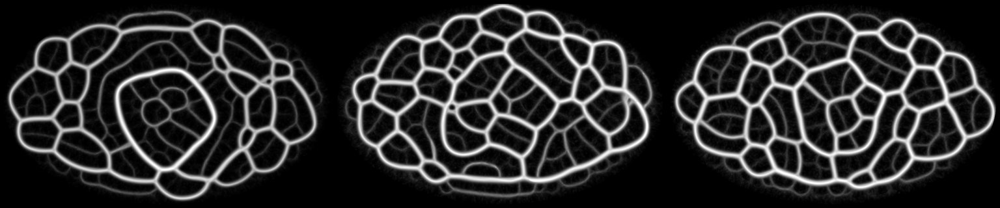
- ring share
- 0.70 median (0.20-0.86)
- loops
- 49.5 (40-52)
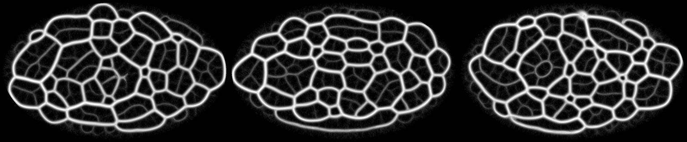
- ring share
- 0.15 median (0.09-0.31)
- loops
- 52.5 (48-58)
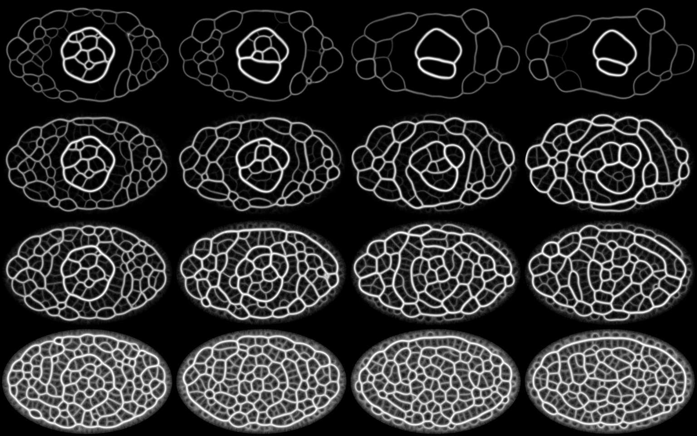
36 Points' rule gives four different dishes
Each walker reads the trail where it stands, s = trail / 50 capped at 1, and one setting becomes base + amp x s. Same disc start and respawn 0.001; 5, 10 and 20 s.
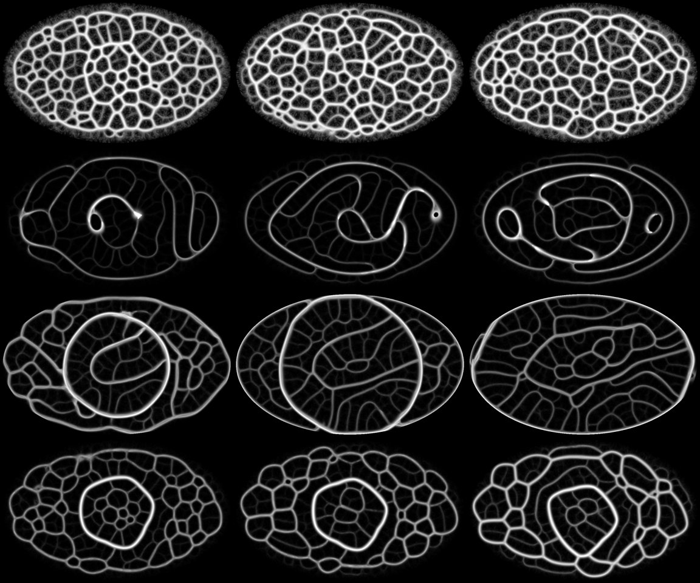
- row 1
- square-root deposit, cap 100: the disc vanishes at once into even polygons, 71 loops at 20 s
- row 2
- sensors 30° narrower in strong trail: long sweeping curves, 25 loops
- row 3
- turn 20° less in strong trail: the ring expands and sweeps the whole dish, 50 loops
- row 4
- step doubles in strong trail: the ring stays round, finer mesh inside, 49 loops
A sickness that travels the network
Sick walkers lay a germ field (red). A healthy walker standing in more than the catch level falls sick, stays sick for a while, then is immune. Here sick walkers also sense half as far and turn twice as hard, which makes ropes. Seeded at 4 s in a disc of radius 10.
- sick
- 2 s, then immune 50 s
- catch
- germ 5
- sick share
- 12% at 5 s, 43% at 6, 69% at 7, 0 at 10
- ever sick
- 100% by 8.5 s
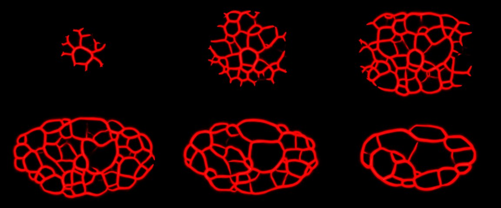
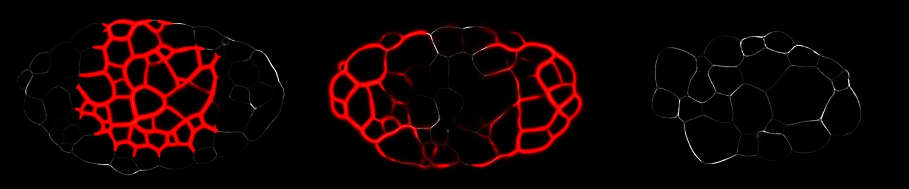
- loops at 9 s
- 41-51
- loops at 20 s
- 15-25
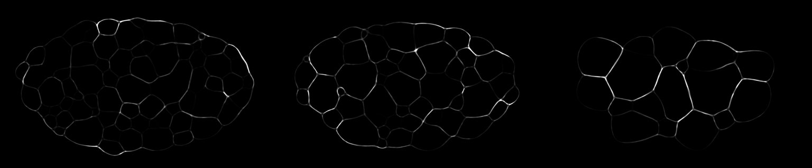
- loops at 9 s
- 48-58
- loops at 20 s
- 17-25
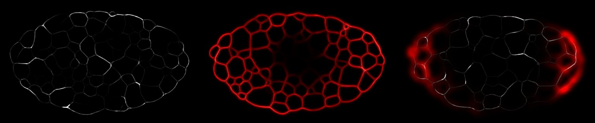
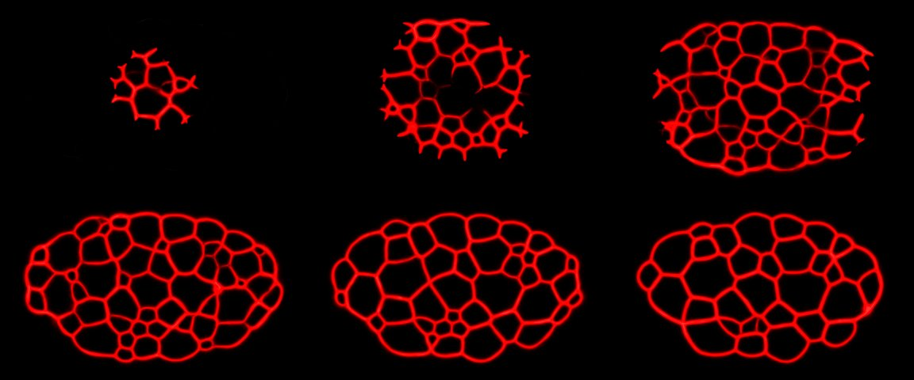
A knife cut does not stop it. Trail and germ cleared in a band 2 dish cells wide, 32 cells from the seed, as the wave starts: 2 s later the far side was as sick as without the cut (more on 4 of 8 seeds, fewer on 4, p 1). Walkers carry it across; a cut removes trail, not walkers.
What did not branch
Jenson's fronts branch into the haze and later close into loops. We tried seven ways to make a haze that the network grows into. The first problem: with Jenson's rule even 2% of the walkers organise into a mesh within 2 s, because the turn only compares sensors.
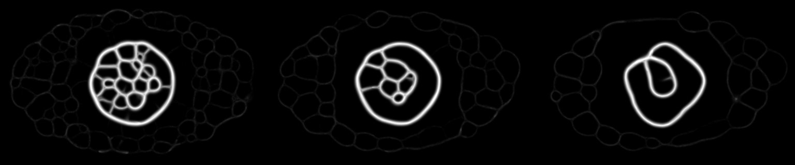
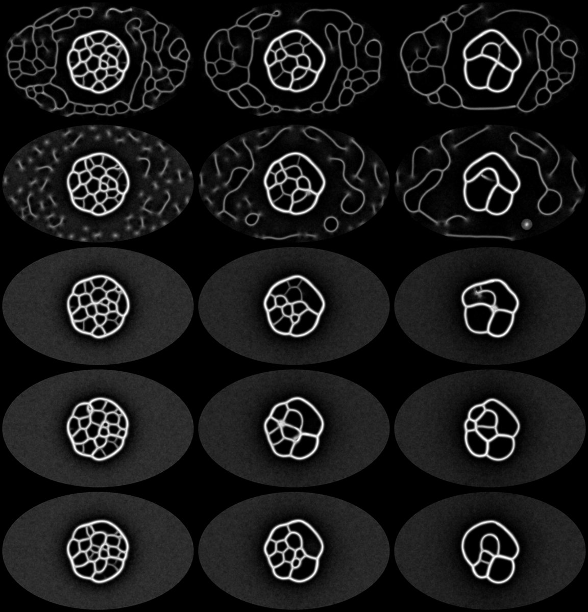
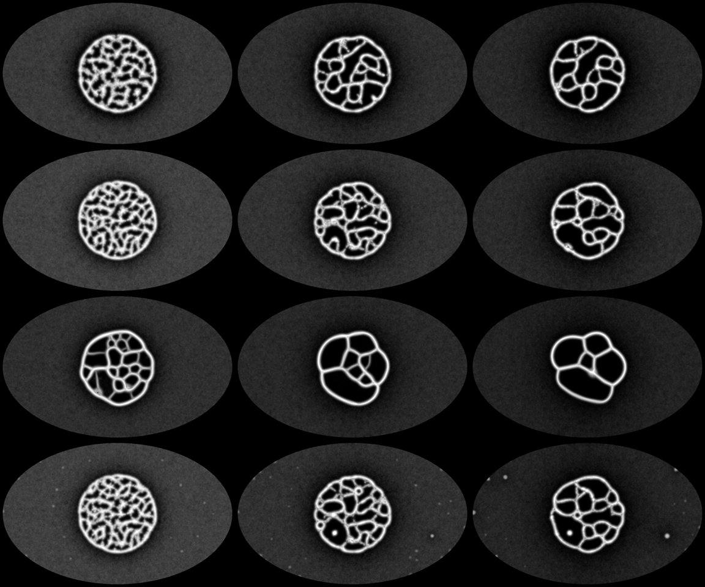
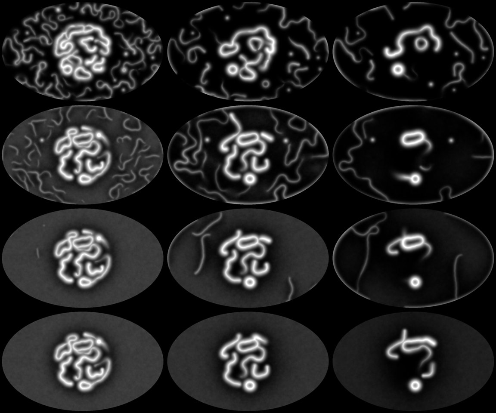
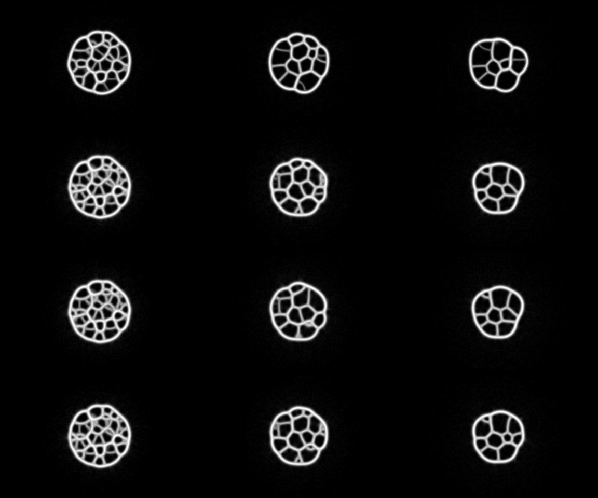
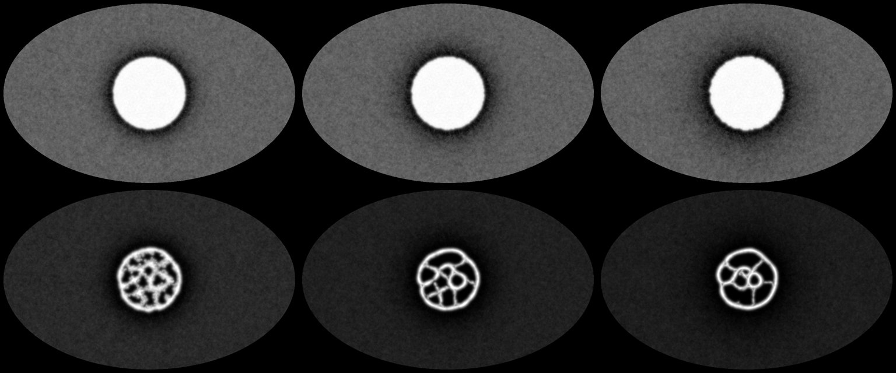
The switches for the GPU sandbox
| Field | What it does | ms a tick, 1M walkers, one core |
|---|---|---|
blob_r, haze | Start: a centred disc of this radius, and the share spread over the dish | start only |
sense_scale, *_mod | Sensor reach, sensor angle, turn and step = base + amp x s^exp | 176.5 vs 132.7 (+33%) |
deposit_cap | Each cell lays deposit x sqrt(min(walkers, cap)) | 150.9 (+14%) |
sense_floor | All sensors under it: random turn | 139.6 (+5%) |
wander | Chance a look of a random heading | 142.5 (+7%) |
sick_*, immune_steps | Contagion: catch level, sick and immune time, germ laid and kept, and how sick walkers move and deposit | 142.9 (+8%) |
Report: Reports/jenson-looks-2026-11-11.md. Base for every run: no food, no crowd limit, sensor 45°, turn 22.5°, reach 18, deposit 0.5. Seeds paired; Bonferroni over three paired tests.